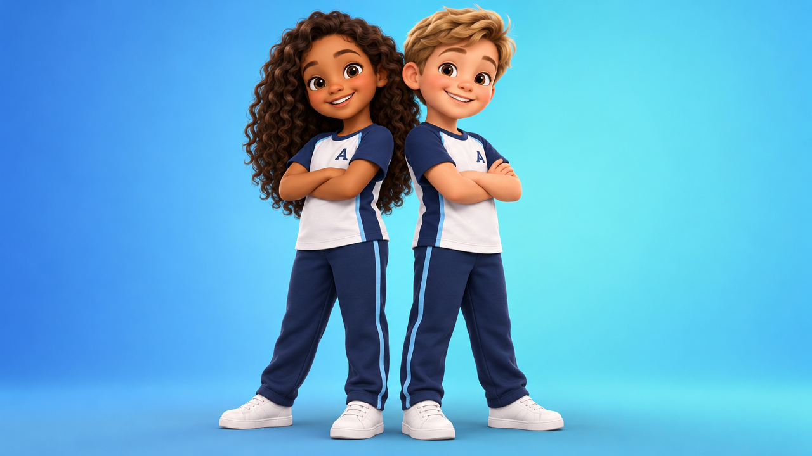
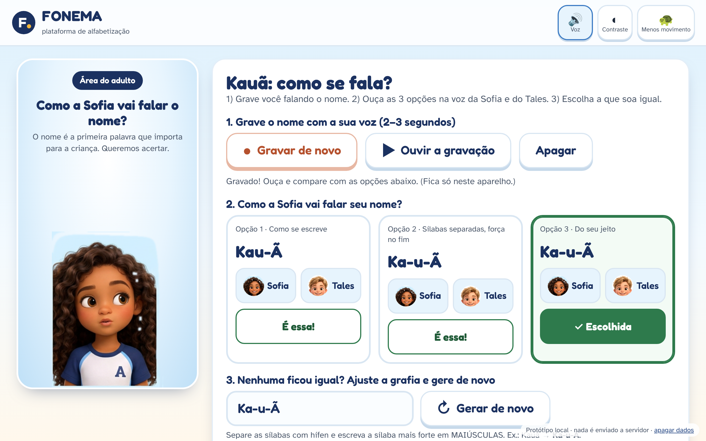
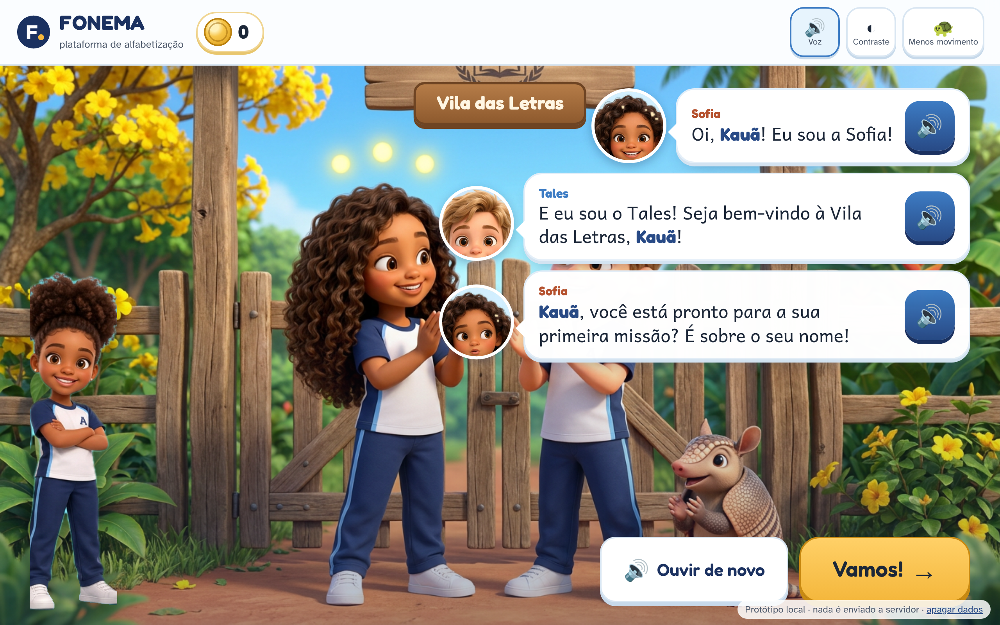
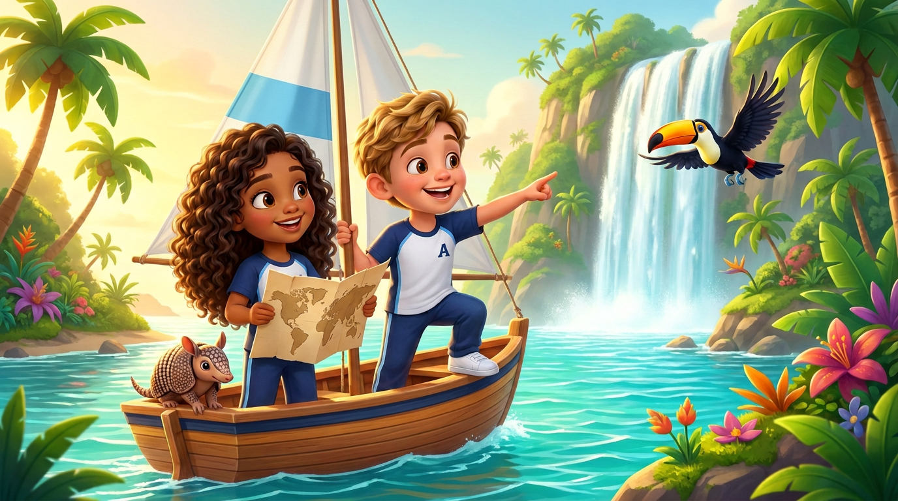
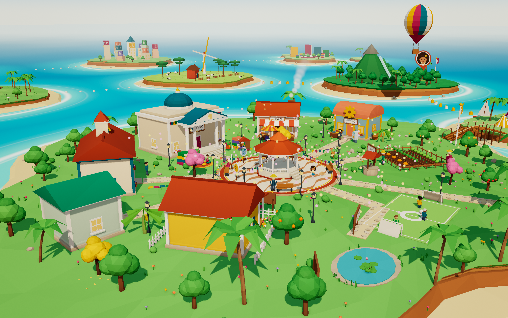

FONEMA

APara quem Decisão 021 §4 · Decisão 014
módulo "Primeiros Sons"
entra em R0 · Quintal
até R10 · Maestria da Leitura
👪 Família
Cadastra, fala o nome, vê o termômetro, recebe resumo no WhatsApp, missões de 5 min em casa.
🧑🏫 Professor
Painel da turma, "Mostra pro professor" corrigido em 1 toque, Academia com certificado de 40 h.
🏫 Gestor da escola
Painel da unidade: turmas, avanço no termômetro, quem precisa de apoio.
🏛️ Secretaria
Painel da rede só com agregados (n ≥ 10), sem dado individual identificável.
BA jornada da criança jornada/README · jogo-completo/README (tabela-mestre)

1 · Cadastro e nome falado
O adulto cadastra e grava como se fala o nome; Sofia e Tales chamam a criança pelo nome sempre (D013). Avatar 3D.

2 · Sondagem lúdica (5–10 min)
Missão com a dupla vê de onde a criança começa. Quem já sabe vai pela Trilha Expressa: provas-relâmpago, fase por fase, sem pular nenhuma (D021).
3 · Regras da jornada
- Avanço por domínio, nunca por tempo
- Um desafio por vez, sem atalho
- Chefe de região = provinha disfarçada (≥ 85% leitura, ≥ 75% escrita)
- Nada se perde, nada bloqueia o mundo
- Primeira missão usa o som do próprio nome
 R0sem. 1–3
R0sem. 1–3Quintal
 R1sem. 3–6
R1sem. 3–6Ilha das Vogais
 R2asem. 6–10
R2asem. 6–10Mata Atlântica · M-L-F

R2bsem. 10–16Mata Atlântica · V-S-N
 R3sem. 16–26
R3sem. 16–26Pampa
 R4sem. 26–36
R4sem. 26–36Pantanal
 R5sem. 36–48
R5sem. 36–48Cerrado
 R6sem. 48–58
R6sem. 48–58Caatinga/Sertão · fecha o Ano 1
 R7sem. 58–70
R7sem. 58–70Amazônia
 R8sem. 70–82
R8sem. 70–82Litoral e Mar

R9sem. 82–94Cidade das Letras
 R10sem. 94–104+
R10sem. 94–104+Arquipélago dos Livros
🏆 Maestria da Leitura · Alfabetização Plena (nível 10)
Total: ~33 fonemas, regras e padrões do português · 89 fases · 233 cenas · 12 chefes · ~500 sessões. Depois: missões procedurais e modo infinito de revisão (a jornada não acaba).
Zum-Zum, o besouro barulhento: o vilão leve que representa a distração. Embaralha letras; a criança vence prestando atenção; no fim de cada região ele vira amigo (D019).
Maternal · "Primeiros Sons"
2–3 anos · sessões de 5–10 min, no máximo 1 por dia, sempre com o adulto. Escuta, cantigas, rimas, sons dos bichos, nome próprio, vocabulário, atenção e convivência. Cada sessão termina com uma proposta fora da tela. 12 conquistas próprias. Aos ~4 anos, passa para R0.